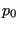
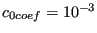

Next: Storing distributions for local Up: Program structure. Previous: Integrating the stresses in Contents
Contact is triggered by the keyword card *CONTACT PAIR. It defines an interaction between a nodal or element face slave surface and a element face master surface. The master surface is triangulated using standard triangulation schemes for the different kind of faces (3-node, 4-node, 6-node or 8-node). This is done in subroutines allocont.f, triangucont.f and trianeighbor.f. This triangulation is a topological one and does not depend on the concrete coordinates. It is performed at the start of nonlingeo.c. The resulting triangles are stored in field koncont (Figure 162): for triangle i the locations koncont(1..3,i) contain the nodes belonging to the triangle, koncont(4,i) contains the element face to which the triangle belongs. The element face is characterized by a code consisting of 10*(element number)+face number. So the code for face 4 of element 33 is 334. The triangles are stored in the order of the contact tie constraints they belong to. For tie constraint i the location of the first triangle in field koncont is given by itietri(1,i), the location of the last one by itietri(2,i).
The triangulation of the master surfaces allows for fast algorithms to determine the master face opposite of a given slave node. To facilitate this search, a field imastop is created: imastop(i,j) yields for triangle j the triangle opposite of node koncont(i,j). This is the neighboring triangle containing the edge to which node koncont(i,j) does not belong. This adjacency information is needed to apply the search algorithms in Section 1.7 of [25]. To facilitate the construction of imastop (done in subroutine trianeighbor.f), the edges of the triangulation are catalogued by use of two auxiliary fields ipe(*) and ime(4,*). An edge is characterized by two nodes i and j, suppose . Then, if no other edge was encountered so far for which i was the lowest node, the present edge is stored in ime(1..4,ipe(i)), where ime(1,ipe(i)) contains j, ime(2,ipe(i)) contains one of the triangles to which the edge belongs, e.g. t1, ime(3,ipe(i)) contains the local position in koncont(1..3,t1) of the node belonging to t1 but not on the edge i-j and ime(4,ipe(i)) is a pointer to ime(1..4,ime(4,ipe(i))) containing any other edge for which i is the lowest node number, else it is zero. 'For node-to-face penalty contact these auxiliary fields are deleted upon leaving trianeighbor. For face-to-face penalty contact they are further used in slavintpoints.f and for mortar contact in slavintmortar.f.
For further calculations both the slave nodes and the slave surfaces have to be catalogued. In case the slave surface is defined by nodes, the corresponding faces have to be found. To this end, all external faces of the structure are catalogued by fields ipoface and nodface in subroutine findsurface.f (Figure 163). Assuming face f1 to contain corner nodes , f1 is stored in nodface(1..5,ipoface(i)). The entries 1..5 contain: node j, node k, node l, a face label in the form 10*element number + local face number and a pointer to any other face for which i is the lowest node.
The slave nodes are stored in field islavnode(*) (Figure 164), tie per tie and sorted in increasing order for each tie separately. nslavnode(i) contains the position in islavnode before the first slave node of tie i. If ntie is the number of ties, nslavnode contains ntie+1 entries, in order to mark the end of the field islavnode as well. The total number of slave nodes is denoted by nslavs. For face-to-face contact the field clearslavnode contains the difference between the clearance specified by the user with the keyword card *CLEARANCE and the clearance calculated based on the actual coordinates. This field is zero in the absence of the *CLEARANCE card. The field clearini contains the clearance for each node belonging to the slave face at stake. This information is copied from field clearslavnode.
The slave faces are stored in islavsurf(1..2,*) (Figure 165 and Figure 166). islavsurf(1,*) contains the slave faces, tie per tie (not in any way sorted), whereas islavsurf(2,*) is an auxiliary field not further needed for node-to-face contact. itiefac(1,i) is a pointer into field islavsurf marking the first face for tie i, itiefac(2,i) points to the last face. The total number of slave faces is ifacecount. The area of the slave faces is stored in a corresponding field areaslav. For face-to-face penalty contact the second column of islavsurf is used as a pointer to locations in field pslavsurf, preceding the integration points in the face (local coordinates and weights). If for a given integration point in the slave face an opposite master face is found, the local coordinates, the label of the master face and the local normal to the master face are stored in field pmastsurf.
For the purpose of calculating the area corresponding to a given slave node, the fields iponoels and inoels are used (Figure 167). For a slave node i, the value iponoels(i) points towards an entry inoels(1..3,iponoels(i)) containing the position within field islavsurf(1,*) of a face to which node i belongs and an entry inoels(2,iponoels(i)) pointing to any other faces to which node i belongs. Field xnoels contains the weight of the node within the face. This information is gathered in subroutine inicont.c.
The master nodes are catalogued in field imastnode in the sane way that the slave nodes are stored in islavnode (Figure 168). The master nodes are stored tie per tie, within each tie they are sorted in ascending order. For tie i nmastnode(i) points towards the location in imastnode immediately before the master node with the smallest number within tie i, nmastnode(i) points towards the master node within tie i with the largest number. The size of imastnode is nmastnode(ntie+1), where ntie is the number of ties. In each iteration and/or increment the topological information of each master triangle is complemented by geometrical information consisting of the center of gravity (in field cg) and the equations of the triangle plane and the planes quasi-perpendicular to the triangle and containing its edges. For triangle i the coordinates of the center of gravity are stored in cg(1..3,i). The coefficients of the equation of the plane orthogonal to the triangle and containing the first edge are stored in straight(1..4,i). The first edge is defined as the edge through nodes koncont(1,i) and koncont(2,i). Similar for edge 2 (straight(5..8,i)) and edge 3 (straight(9..12,i)). The coefficients of the triangle plane are stored in straight(13..16,i). The geometrical information is calculated in routine updatecontpen.f. The planes bordering the triangles are quasi-orthogonal to the triangle in the sense that they are in-between the truly orthogonal planes and the planes through the triangle edges and orthogonal to the neighboring triangles. To this end the mean normals are stored in field xmastnor(3,*) (Figure 168).
Further geometrical information is the area of each slave face i, stored in areaslav(i), the area corresponding to slave node i, stored in springarea(1,i) and the penetration at the start of each step in slave node i ( if any penetration , else 0), stored in springarea(2,i). These calculations are performed each time gencontelem_n2f.f or gencontelem_f2f.f is called.
Subsequently, contact spring elements are generated (routine gencontelem.f). To this end, each node belonging to the dependent contact slave surface is treated separately. To determine the master surface the node interacts with, a triangle belonging to the triangulation of the corresponding master surface are identified, such that its center of gravity is closest to the dependent node. Then, a triangle is identified by adjacency, such that the orthogonal projection of the slave node is contained in this triangle. If such a triangle is found, a contact spring element is generated consisting of the dependent node and the independent surface the triangle belongs to, provided the node penetrates the structure or the clearance does not exceed a given margin. Before checking the penetration or clearance an adjustment of the geometry is performed in case the user has activated the ADJUST parameter. If any of these conditions is not satisfied, no contact spring element is generated for this dependent node and the next node is treated. The sole purpose of the triangulation of the master surface is the fast identification of the independent face a dependent node interacts with.
The stiffness matrix of the contact spring elements is calculated in springstiff.f, called by mafillsm.f. In order to determine the stiffness matrix the local coordinates of the projection of the dependent node onto the independent surface are needed. This is performed in attach.f. Use is made of a cascaded regular grid to determine the location within the independent surface which is closest to the dependent node. The local coordinates are needed to determine the shape functions and their derivatives. The contact force is determined in springforc.f, called by results.f. Here too, routine attach.f is called.
Since the geometrical information is recalculated in every iteration, large deformations are taken into account, unless the user has specified SMALL SLIDING in which case the geometry update takes place once at the start of each new increment.
The material properties of the contact spring, defined by means of the *SURFACE INTERACTION, the *SURFACE BEHAVIOR and the *FRICTION card, are stored in the same fields as the *MATERIAL and *ELASTIC,TYPE=ISOTROPIC card.
The general structure of the contact algorithms for nonlinear geometric calculations is as follows. The contact topology is determined in inicont.c. This routine is called once at the start of a new step and calls the following routines:
For face-to-face penalty contact the routine precontact.c is called at the start of each new increment. Its purpose is:
Furthermore, for face-to-face penalty contact the routine interpolatestate is called at the start of each new increment. It interpolates the state variables (internal variables such as the slip accumulated so far) from the integration points at the end of the previous increment, if any, to the new integration points determined in slavintpoints.f. Indeed, at the start of a new increment the matching between the slave and master surfaces is done anew and usually leads to a change in the location of the integration points.
For contact with friction there are 9 internal variables (state variables). They are:
All of them are stored in global Carthesian coordinates.
The contact.c routine is called once per iteration. This applies to node-to-face as well as face-to-face penalty contact. For node-to-face contact the purpose of contact.c is:
If a spring element is generated, its topology is stored in field kon in accordance to Figure 169. The parameter igauss is needed to identify the area and overlap.
For face-to-face penalty contact contact.c only calls routine gencontelem_f2f. At the start of a new increment the field pmastsurf is filled for those slave integration points for which an opposite master face is found. It contains the local coordinates of the master face, its label (10*element+local face number) and the local normals. Furthermore, field springarea is filled containing the corresponding slave area and the overlap at the start of each increment in the first step. Please note that pmastsurf and springarea are calculated at the start of an increment and kept constant for all iterations across the complete increment. The contact spring elements, however, are generated anew in each iteration based on the sign of the clearance. A contact element is generated only if the clearance is negative (i.e. in case of penetration). The topology of the spring element is stored in field kon (Figure 170) and contains the total number of nodes (slave+master), the master nodes, the slave nodes, the address of the integration point in pslavsurf and the address of the slave face in islavsurf.
Contact properties (*SURFACE BEHAVIOR, *FRICTION, *CONTACT DAMPING, *GAP HEAT GENERATION) are preceded by a *SURFACE INTERACTION card and are internally treated as material properties, i.e. the *SURFACE INTERACTION card is treated in the same way as a *MATERIAL card. All data are stored in the elastic field elcon, except for the tabular pressure-overclosure data, which are stored in the isotropic hardening field plicon, and the gap conductance data, which are stored in the kinematic hardening field plkcon. The contact properties in elcon are stored in the order of Table 20 for exponential, linear, tabular and tied pressure-overclosure behavior.
| entry | kind | exponential | linear | tabular | tied |
| 1 | *SURFACE BEHAVIOR | - | - | ||
| 2 | *SURFACE BEHAVIOR |  | - | ||
| 3 | *SURFACE BEHAVIOR | ||||
| 4 | *SURFACE BEHAVIOR | - |  | not used | |
| 5 | *CONTACT DAMPING | not used | |||
| 6 | *FRICTION | - | |||
| 7 | *FRICTION | ||||
| 8 | *CONTACT DAMPING | - | |||
| 9 | *GAP HEAT GENERATION | - | |||
| 10 | *GAP HEAT GENERATION | - | |||
| 11 | *GAP HEAT GENERATION |
|
|
|
- |
The following remarks are due: